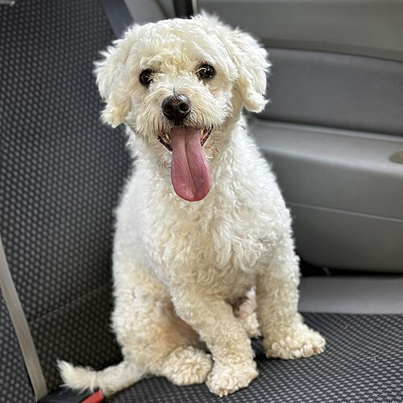
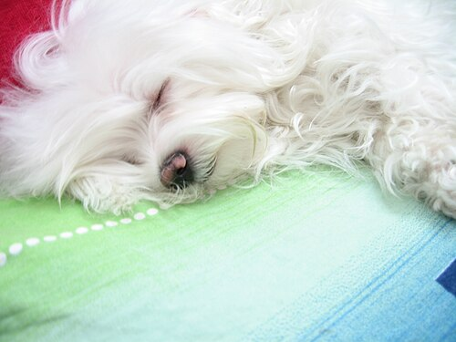
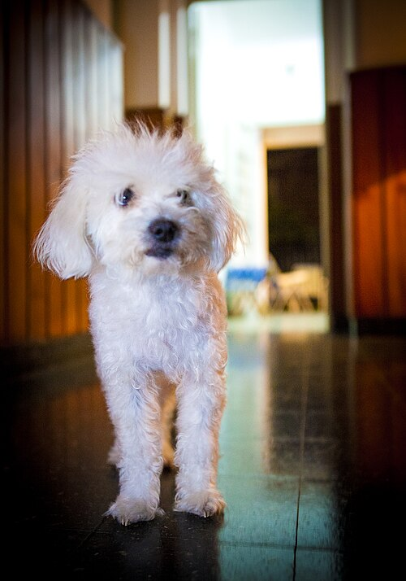
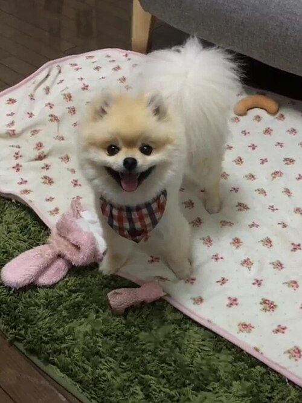
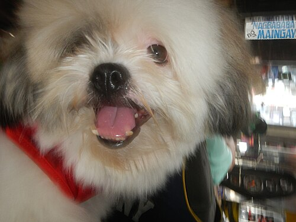
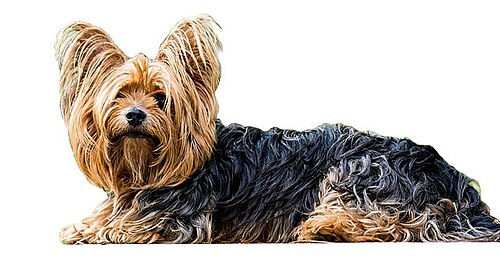
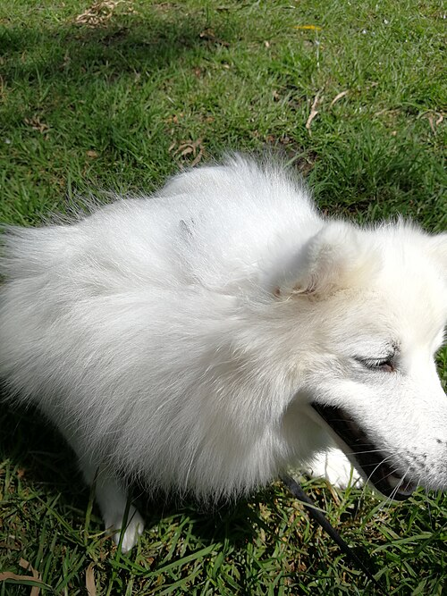
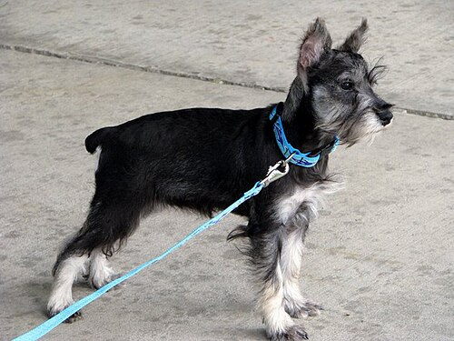
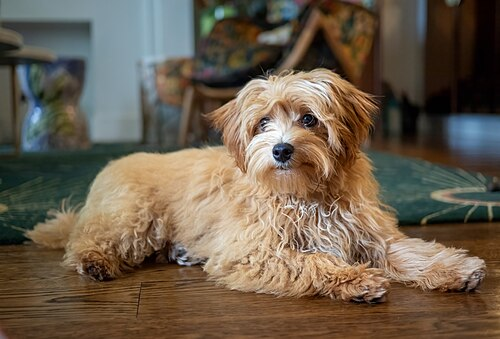
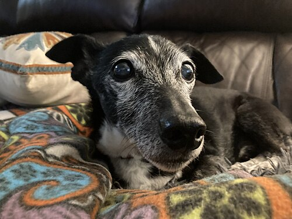

Wikimedia Commons의 공개 라이선스 사진입니다. 가상의 체험 고객을 소개하는 예시이며 실제 고객이나 미용 전·후 기록을 뜻하지 않습니다. 원본 썸네일 파일을 보관하며 화면에서는 표시 영역에 맞게 잘라 보일 수 있습니다. 각 사진의 라이선스는 아래 원본 링크에서 확인할 수 있습니다.

TudorTulok
원본과 저작자 · CC BY-SA 4.0

Arvin5200
원본과 저작자 · CC BY-SA 3.0

leonardo samrani from rosario, argentina
원본과 저작자 · CC BY 2.0

Chunbin

Rurbanlife

Desaix83, d'après le travail de Josch13
원본과 저작자 · CC0

Llama223

Erbean
원본과 저작자 · Public domain

Rhododendrites

Twawri